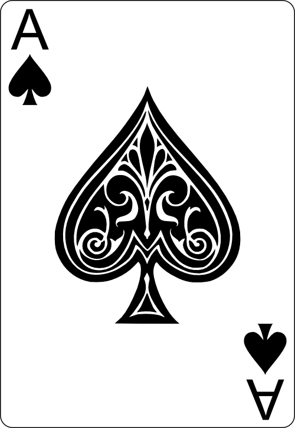
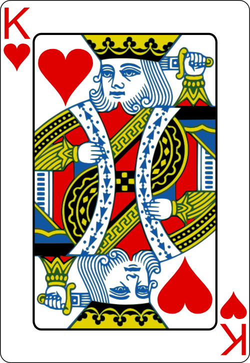
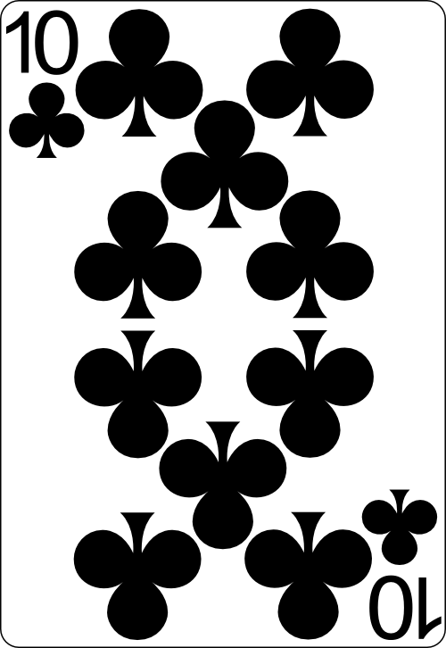
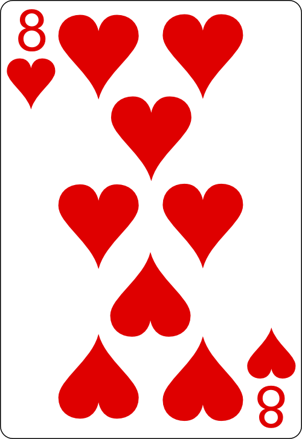
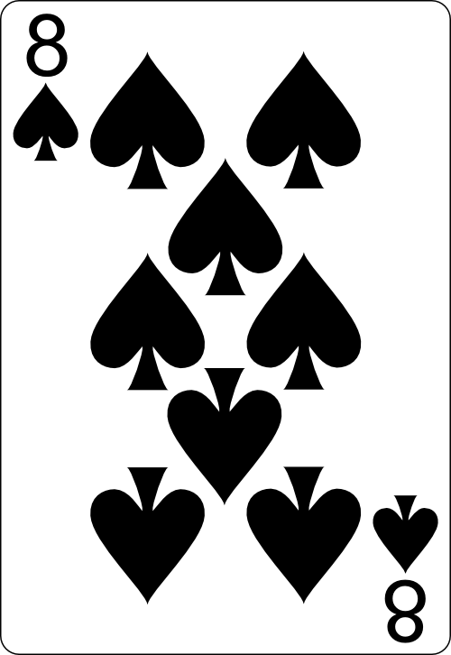
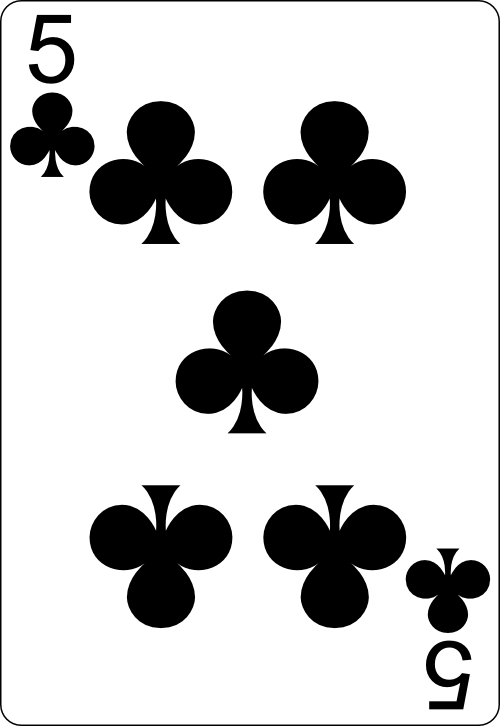

1. 게임 진행
- 보유 포인트 안에서 1 이상의 정수를 입력하고 게임 시작을 누릅니다.
- 카드는 2장씩 받고, 딜러 카드 한 장과 점수는 숨겨집니다.
- Hit은 한 장 더 받기, Stand는 그만 받고 딜러 차례로 넘기기입니다.
- 딜러는 숨긴 카드를 공개하고 16점 이하면 Hit, 17점 이상이면 멈춥니다.
내가 먼저 21점을 넘으면 패배하고, 딜러가 넘으면 내가 승리합니다. 점수가 같으면 무승부입니다.
2. 카드 점수
- 2~10은 숫자 그대로, J, Q, K는 10점입니다.
- A는 11점이고, 합계가 21을 넘으면 1점으로 바꿉니다.
블랙잭


A + K = 21점
일반 점수


10 + 8 = 18점
버스트



10 + 8 + 5 = 23점
처음 두 장으로 21점이면 블랙잭으로 바로 승리합니다. 양쪽 다 블랙잭이면 무승부입니다.
세 장 이상으로 만든 21점은 일반 21점입니다.
3. 포인트와 기록
처음에는 10000 P로 시작하고, 입력한 포인트는 게임 시작 시 차감됩니다.
| 결과 | 100 P로 시작했을 때 돌려받는 포인트 |
|---|---|
| 일반 승리 | 200 P (이익 +100 P) |
| 블랙잭 승리 | 250 P (이익 +150 P) |
| 패배 | 0 P (손실 -100 P) |
| 무승부 | 100 P (변동 없음) |
블랙잭 이익은 1.5배이고, 소수점은 반올림합니다.
- 다음 라운드는 새 덱 52장으로 시작하고, 포인트와 기록은 유지됩니다.
- 기록 보기에서 카드, 점수, 결과와 실제 포인트 증감을 볼 수 있습니다.
- 보유 포인트가 0이면 종료됩니다.
- F5를 누르면 기록과 라운드가 초기화되고 다시 10000 P로 시작합니다.